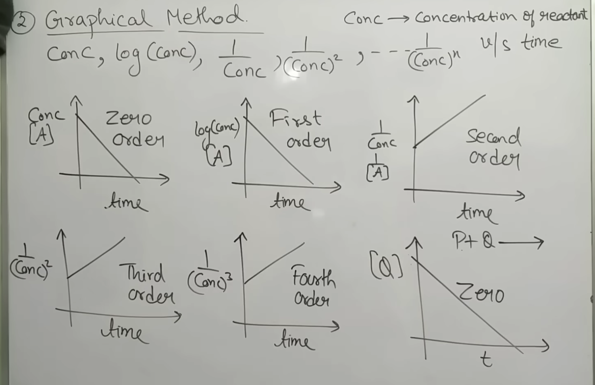

CHEMICAL KINETICS : HOW TO DETERMINE ORDER OF REACTION? HALF LIFE METHOD
& OTHER METHODS
YOUTUBE PLAYLIST LINK
ALL TOPICS IN THE PLAYLIST :
-
Introduction - Rate of Reaction
-
Factors Affecting Rate of Reaction - 7 Factors
-
Rate Law and Order Of Reaction
-
Initial Rate Method to Determine Order of Reaction & Rate Law
-
ZERO Order Kinetics | Rate Law and Half Life Of Zero Order
-
FIRST Order Kinetics | Complete First Order Reaction
-
Second, Third & nth Order Reaction & Kinetics - All Formulae
-
How to Determine Order of Reaction? Half Life Method & Other Methods
-
Molecularity of Reaction | Pseudo Order Reaction | Molecularity
-
Arrhenius Equation | Effect of Temperature on Rate of Reaction
-
Complex Reaction - Mechanism of Reaction - Steady State
Approximation
-
Parallel First Order Reaction Kinetics
HOW TO DETERMINE ORDER OF REACTION? HALF LIFE METHOD & OTHER METHODS
- Lecture roadmap: methods list
- Half-life method
- Graphical method (linear plots)
- Integrated rate law (hit-and-trial)
-
-
Goal: determine order \(n\) of a reaction from given
experimental data.
-
Methods discussed (data-dependent choice):
- \(t_{1/2}\) (half-life) method
- Graphical (linear plot) method
- Integrated rate law method (hit-and-trial)
- Initial rate method (covered separately)
-
Typical exam trend:
-
Most questions are 0th and 1st order; higher orders appear
less frequently.
- Use the method that matches the given data format.
-
-
Standard half-life formulas (for reference):
-
0th order:
\(t_{1/2}=\dfrac{[A]_0}{2k}\)
-
1st order:
\(t_{1/2}=\dfrac{0.693}{k}\) (independent of \([A]_0\))
-
2nd order:
\(t_{1/2}=\dfrac{1}{k[A]_0}\)
-
General dependence (valid for any order \(n\)):
\(t_{1/2}\propto [A]_0^{\,1-n}\)
- \(n=0 \Rightarrow t_{1/2}\propto [A]_0\)
-
\(n=1 \Rightarrow t_{1/2}\propto [A]_0^{0}\) (constant)
- \(n=2 \Rightarrow t_{1/2}\propto \dfrac{1}{[A]_0}\)
-
When two half-lives are given for two initial concentrations (or
pressures for gases):
\(\dfrac{t_1}{t_2}=\left(\dfrac{[A]_1}{[A]_2}\right)^{1-n}\)
-
For gaseous reactions, use initial pressure \(P_0\) in place
of concentration:
\([A]_0 \propto P_0\) (at fixed \(T\))
-
If confusion occurs between \((1-n)\) and \((n-1)\), verify
using known cases: 0th order depends on \([A]_0\), 1st order
does not.
-
Practice (half-life method):
-
Question 1
-
Given: \(t_{1/2}=20\ \text{min}\) at initial
concentration \([A]_0=x\).
-
When \([A]_0\) is doubled (\(2x\)), \(t_{1/2}\) becomes
\(10\ \text{min}\).
- Find order \(n\).
-
Answer: \(n=2\) (since doubling \([A]_0\) halves
\(t_{1/2}\Rightarrow t_{1/2}\propto 1/[A]_0\)).
-
Question 2
-
Gaseous reaction: initial pressure vs half-life data
given (use \(P_0\) in place of \([A]_0\)).
-
Sample pair used: \(P_1=66.66\ \text{kPa},\ t_1=235\
\text{min}\); \(P_2=33.33\ \text{kPa},\ t_2=950\
\text{min}\).
-
Using
\(\dfrac{t_1}{t_2}=\left(\dfrac{P_1}{P_2}\right)^{1-n}\),
estimate \(n\) (experimental data may need
approximation).
-
Answer: \(n=3\) (ratio \(\dfrac{235}{950}\approx
\dfrac{1}{4}=2^{-2}\) and \(\dfrac{66.66}{33.33}\approx
2\Rightarrow 2^{-2}=2^{1-n}\Rightarrow n=3\)).
-
Question 3
-
Gaseous reaction: initial pressure changes (700, 430,
104 kPa) but half-life stays \(\approx 84\ \text{min}\).
- Find order \(n\) without full calculation.
-
Answer: \(n=1\) (constant half-life \(\Rightarrow\)
first order).
-
-
Idea: if an appropriate function of reactant concentration gives
a straight-line plot vs time, the order is identified directly.
-

0th order:
-
\([A]\) vs \(t\) is a straight line with negative slope.
-
1st order:
-
\(\log_{10}[A]\) vs \(t\) is a straight line with negative
slope.
-
Higher orders (positive-slope straight lines):
- 2nd order: \(\dfrac{1}{[A]}\) vs \(t\) is linear.
- 3rd order: \(\dfrac{1}{[A]^2}\) vs \(t\) is linear.
-
General:
If \(\dfrac{1}{[A]^m}\) vs \(t\) is linear, then order
\(n=m+1\).
-
-
Data pattern: a table of concentration \([A]\) at different
times \(t\) (half-life is not provided).
-
Strategy (hit-and-trial):
-
Assume an order (start with 1st order, since it is most
common).
- Compute \(k\) using two different data pairs.
-
If \(k\) is (approximately) constant for different pairs,
that assumed order is correct.
-
If not, repeat for 0th order, then 2nd, then 3rd, etc.
-
Integrated forms used to calculate \(k\):
-
1st order:
\(k=\dfrac{2.303}{t}\log_{10}\!\left(\dfrac{[A]_0}{[A]}\right)\)
-
0th order:
\(k=\dfrac{[A]_0-[A]}{t}\)
-
2nd order:
\(k=\dfrac{1}{t}\left(\dfrac{1}{[A]}-\dfrac{1}{[A]_0}\right)\)
-
3rd order:
\(k=\dfrac{1}{2t}\left(\dfrac{1}{[A]^2}-\dfrac{1}{[A]_0^2}\right)\)
-
Practice (integrated rate law / hit-and-trial):
-
Question 4
-
Given concentration-time data (units as provided):
- \([A]=50\) at \(t=0\ \text{min}\)
- \([A]=30\) at \(t=10\ \text{min}\)
- \([A]=18\) at \(t=20\ \text{min}\)
-
Check 1st order by computing \(k\) using different
pairs:
-
Pair 1: \([A]_0=50,\ [A]=30,\ t=10\)
\(k_1=\dfrac{2.303}{10}\log_{10}\!\left(\dfrac{50}{30}\right)\)
-
Pair 2: \([A]_0=50,\ [A]=18,\ t=20\)
\(k_2=\dfrac{2.303}{20}\log_{10}\!\left(\dfrac{50}{18}\right)\)
-
Decision rule:
- If \(k_1\approx k_2\), reaction is 1st order.
-
If not, test 0th order using
\(k=\dfrac{[A]_0-[A]}{t}\), then 2nd order, etc.